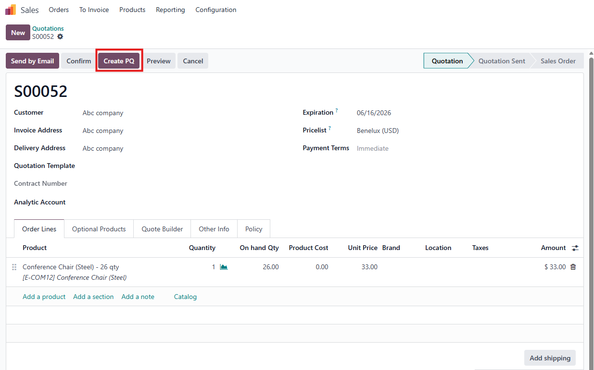
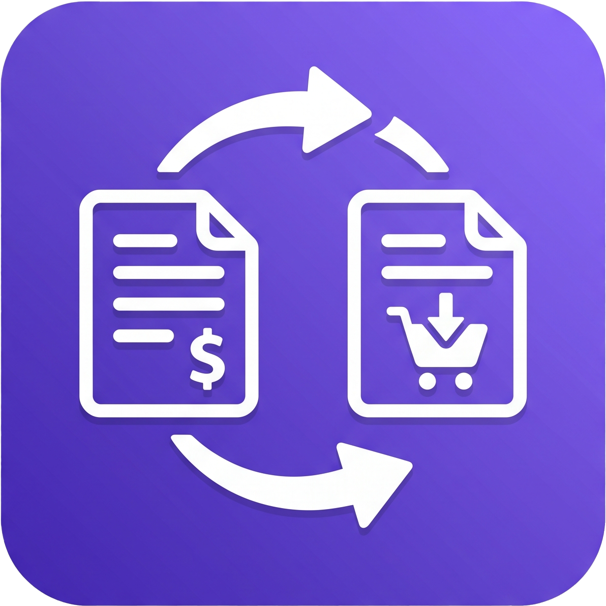
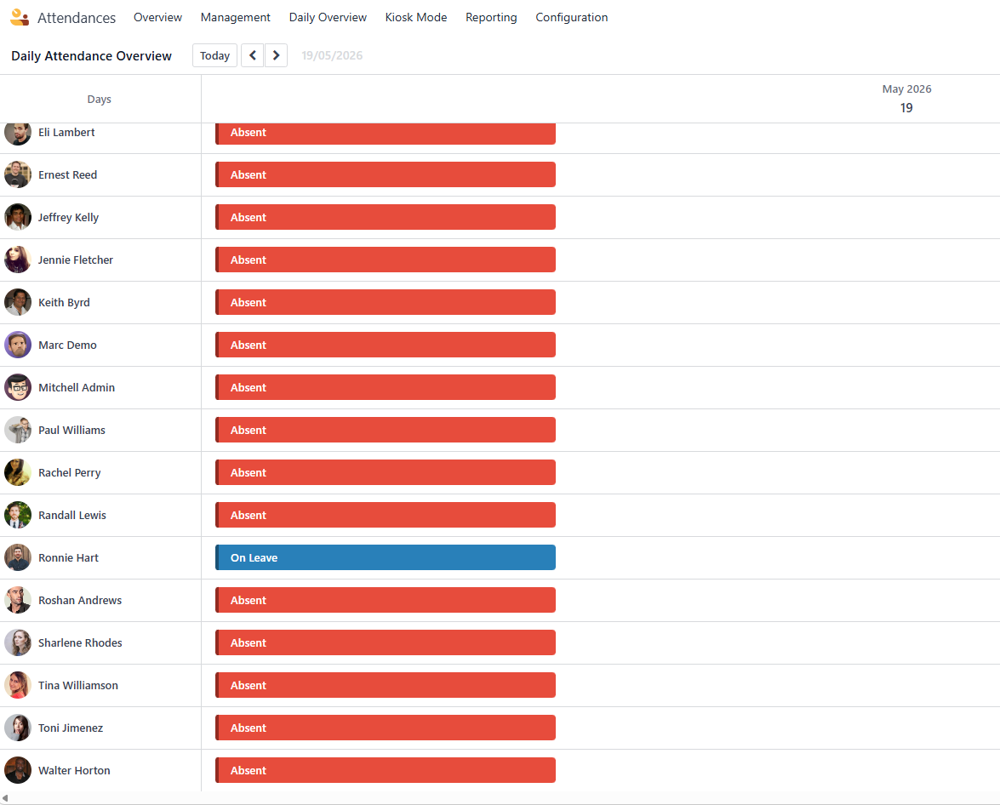
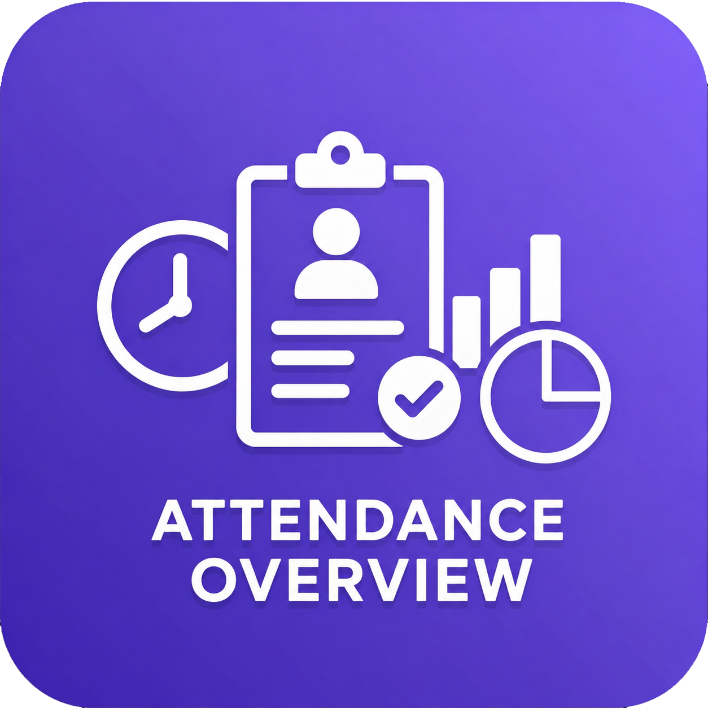
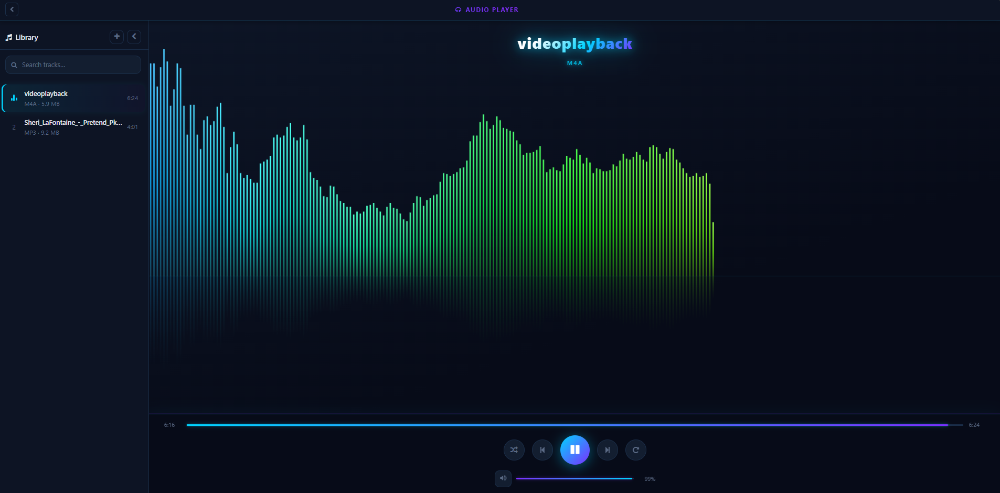

Custom Apps • Addons • Integrations • Full Support
We design, develop, and maintain tailor-made Odoo modules and addons that perfectly fit your business workflows — with full support for Odoo versions 16, 17, 18 & 19.
From a single custom module to a complete Odoo ERP rollout — we cover the full spectrum.
We build purpose-built Odoo modules from scratch — perfectly aligned with your unique business logic, reports, and automation needs.
Extend or modify existing Odoo apps to match your workflows. We customize standard features without breaking upgradability.
Seamlessly migrate your Odoo instance and custom modules from older versions to Odoo 16, 17, 18, or 19 with full data integrity.
Connect Odoo with payment gateways, shipping APIs, e-commerce platforms, ERPs, and any external system via REST or XML-RPC.
Dedicated post-deployment support, bug fixes, performance optimization, and user training to keep your Odoo running at peak.
End-to-end Odoo setup on your server or cloud — configuration, module installation, user roles, and production-ready deployment.
Ready-to-install Odoo modules crafted by our team — each solving a real-world business problem.


A smart bridge module that connects your Sales and Purchasing flows to handle out-of-stock items without missing a beat. When a customer order can't be fulfilled from current stock, this addon lets you instantly generate a Purchase Quotation (PQ) directly from the Sales Order — keeping both teams in sync and the workflow moving.


A dedicated Daily Overview dashboard added right inside Odoo Attendances. At a glance, managers see the real-time attendance status of every active employee for any selected date — no more digging through raw check-in records. Color-coded indicators make the entire workforce status instantly readable.

A full-featured music player built right into Odoo. Scan your local audio folder, play tracks offline, enjoy a real-time neon visualizer, and keep music running while you work with a floating mini player.
From your idea to a live Odoo module — clear, fast, and collaborative.
We understand your workflow challenges and define the exact scope of your custom Odoo module.
We map the data model, views, and automation logic — then share a clear spec for your review.
Our Odoo developers build the module, run unit and integration tests, and deliver a staging demo.
We deploy to your production instance and provide ongoing support, updates, and training.
Tell us about your workflow challenge. We'll design and build the exact Odoo solution you need — on any version from 16 to 19.